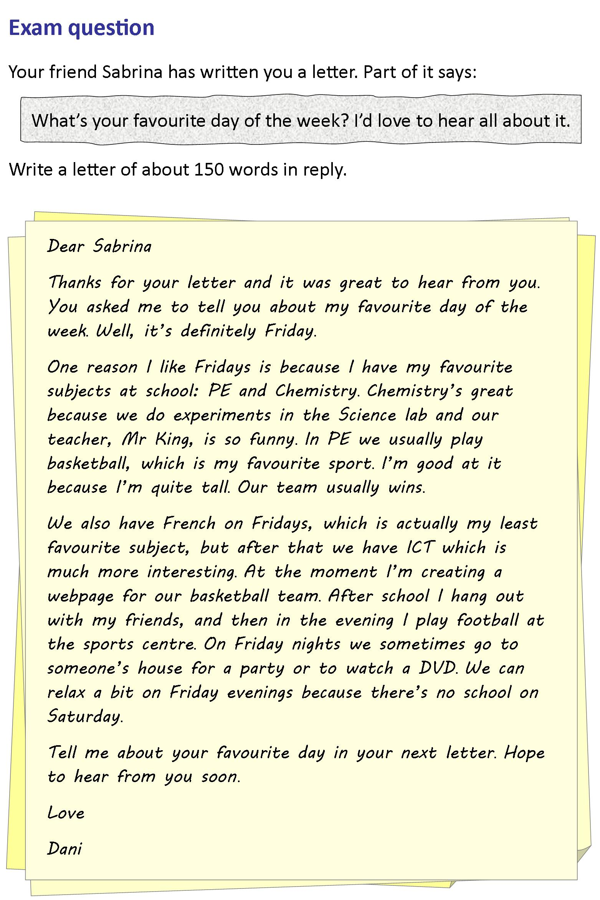

Instructions
Do the preparation exercise first. Then do the other exercises.
Reading

Discussion
What's your favourite day of the week, and why?
Language level
Personal online tutoring
EnglishScore Tutors is the British Council’s one-to-one tutoring platform for 13- to 17-year-olds.

Comments